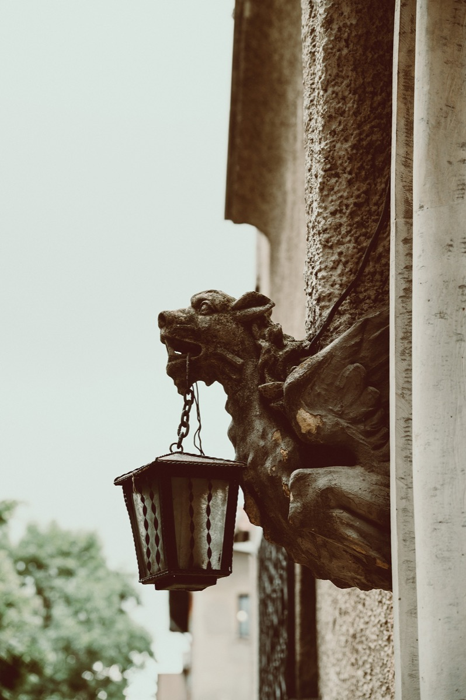
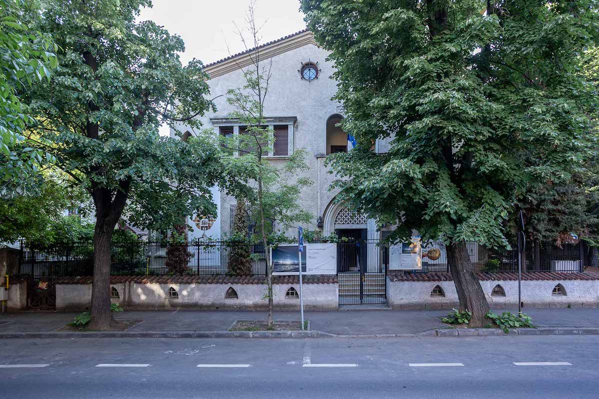
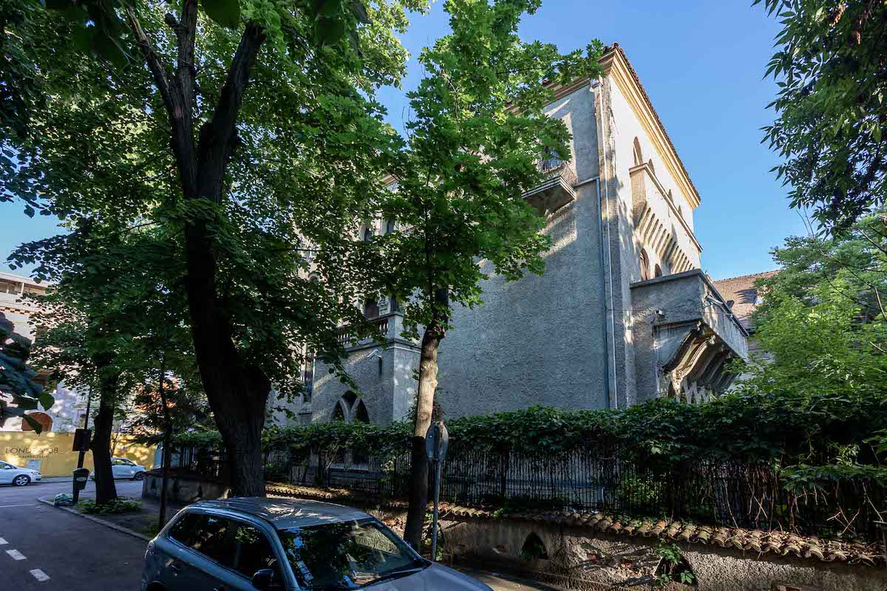
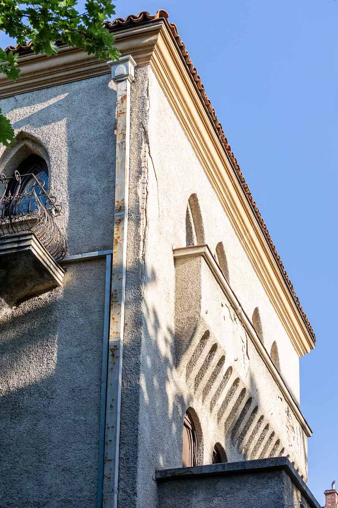
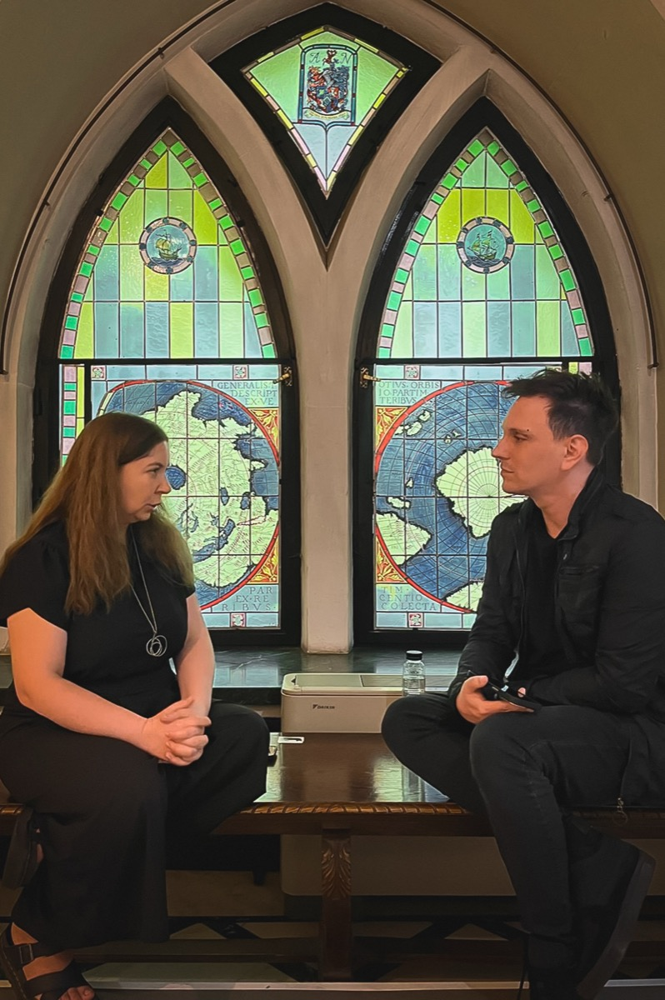
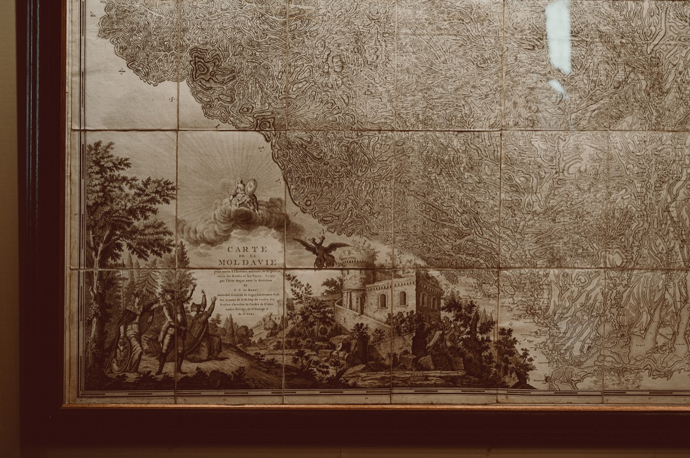
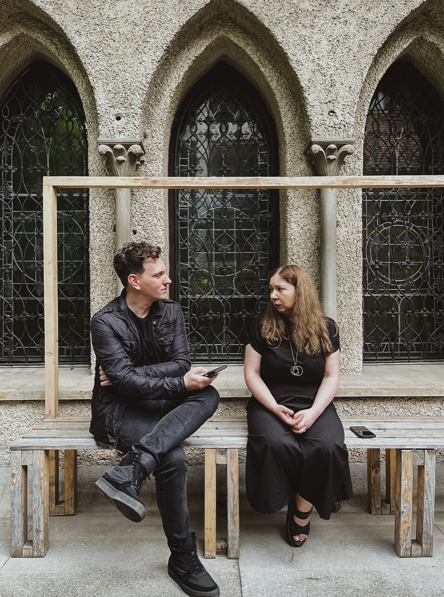
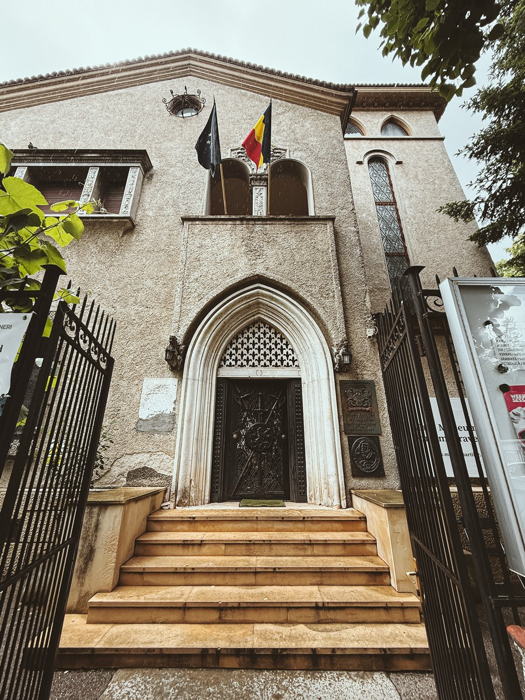

Este o după-amiază de primăvară ploioasă când ajung la Muzeul Național al Hărților și Cărții Vechi – pe scurt, Muzeul Hărților, pe una din străduțele liniștite și pitorești ale cartierului Dorobanți din București. Urmează să mă întâlnesc cu Ioana Marinescu, muzeograf al instituției, pregătit cu o listă de întrebări despre clădire, despre patrimoniul muzeului și despre cum e să lucrezi zi de zi într-un loc atât de plin de istorie încât e prezentă, la propriu, pe toți pereții. Ajung într-un moment destul de agitat, fix cu o zi înainte de Noaptea Muzeelor, când întreaga echipă e prinsă în munca de organizare și ultimele pregătiri pentru a putea primi valuri de vizitatori curioși, până târziu în noapte.
Mă opresc o secundă să admir casa ce se dezvăluie între coroanele copacilor abia înverziți. Ridicată în interbelic, vila monument istoric îmbină arcele frânte de inspirație gotică și logiile mediteraneene, volume și retrageri asimetrice, ornamente plasate cu atenție și fără exces. Este un stil întâlnit la multe vile bucureștene din acea epocă, mai ales în cartierele înstărite ale orașului, stil inspirat din arhitectura maură a Peninsulei Iberice și a vilelor venețiene, pe care astăzi îl numim pitoresc-mediteraneean. Urc apoi șirul de trepte care duc spre intrarea monumentală, căutând să mă adăpostesc de ploaie cât mai repede, și intru pe ușa impresionantă a muzeului — o ușă grea, metalică, bogat ornamentată, cu o emblemă centrală străpunsă de săbii și halebarde, care îți dă impresia că urmează să treci pragul unui castel medieval.
Senzația continuă și înăuntru. Ajuns în holul principal, observ că interiorul continuă povestea „citită” deja din stradă: firide, nișe semicirculare în pereții groși și texturați, ca un mihrab care atestă influența maură a arhitecturii, cu băncuțe pentru vizitatorii care așteaptă tururile ghidate. O cameră imediat în stânga holului îmi atrage brusc atenția. E o încăpere întunecată, în capătul căreia strălucește, în razele ce intră timid prin geamurile arcuite, un imens glob pământesc. Rămân acolo, captivat de atmosfera dramatică, când apare Ioana Marinescu, muzeografa cu care am întâlnire.
Caldă și prietenoasă, Ioana mă poftește într-una din încăperile de la parter pentru interviu, unde ne așezăm pe o băncuță de lemn masiv, în fața unor ferestre cu vitralii și cu aceeași formă gotică întâlnită la majoritatea ferestrelor casei.
Începem discuția cu întrebări despre clădire și cum a devenit ea gazda Muzeului Hărților. Așa aflu că este, de fapt, un muzeu foarte tânăr. A luat naștere în 2003, din donația familiei Năstase, iar faptul că astăzi pare atât de bine integrat în peisajul cultural al Bucureștiului spune multe despre eforturile oamenilor care îi dau viață zi de zi. „Pentru lumea muzeelor”, îmi explică Ioana, „asta e o vârstă tânără. După ce împlinești suta de ani ca muzeu, cred că începi să atingi majoratul în viață”, spune ea zâmbind.
Povestea clădirii este însă mult mai veche și nu întru totul cunoscută. Muzeografa îmi explică faptul că există o anumită discontinuitate în documente și că este posibil ca imobilul inițial de pe teren, aparținând unei familii de armeni și cunoscut ca Vila Maria H. Kazazian, să fi avut altă înfățișare, în stil neoromânesc, fiind semnat de Toma T. Socolescu. Clădirea actuală este opera arhitectului Emil Călinescu și datează din 1942. Influențele sale mediteraneene, gotic-hispanice și neo-mudéjar pot fi observate și în încăperea în care stăm de vorbă, așezați lângă ferestrele lungi și arcuite. Este același stil arhitectural care a dat farmec multor străzi elegante ale Bucureștiului anilor ’30 și ’40 și pe care îl întâlnim mai ales în cartiere precum Dorobanți-Capitale sau Cotroceni. „Era un stil la modă pentru proprietarii perioadei”, ne spune Ioana. „Dacă doreai să fii o persoană elegantă și să ai o casă frumoasă în noile zone rezidențiale, îți doreai tipul ăsta de elemente și decorațiuni.”
Zona actualului muzeu face parte din parcelarea Bonaparte-Mora, cele mai multe autorizații de construcție pe strada Londra fiind emise în anii 1920. Pe atunci era unul dintre cartierele preferate ale elitelor bucureștene. Pe aceste străzi apăreau vile elegante cu grădini generoase, în stil neoromânesc, Art Deco sau pitoresc-mediteraneean. Chiar și astăzi, dacă te plimbi fără grabă pe străduțele din jurul muzeului, poți descoperi Bucureștiului gândit ca oraș-grădină, departe de zgomotul și densitatea altor cartiere.
Destinul clădirii muzeului a cunoscut multe etape. După diverse utilizări de-a lungul timpului, inclusiv ca sediu diplomatic, clădirea a devenit gazda colecției de hărți și cărți vechi. În acel moment a început o transformare specială. Nu a fost vorba doar de instalarea unor exponate într-o casă existentă, ci despre o încercare de a face întregul spațiu să vorbească aceeași limbă cu obiectele pe care urma să le adăpostească.
În amenajarea muzeului a fost implicată o echipă de artiști, iar rezultatul se vede la fiecare pas. Vitraliile nu sunt simple elemente decorative. Ele au fost create special pentru acest loc și integrează simboluri heraldice, motive nautice și elemente inspirate din cartografia veche. Plafoanele au fost decorate cu hărți astrale, constelații și chiar monștri marini. Întregul ansamblu funcționează ca o prelungire a patrimoniului expus pe pereți. Muzeul încearcă permanent să depășească imaginea tradițională a unei instituții în care obiectele stau cuminți în vitrine și așteaptă să fie privite.
În prezent, muzeul are aproximativ 12 angajați și primește anual în jur de 13.000 de vizitatori. Pentru o clădire de asemenea dimensiuni, este un număr impresionant. Spațiul nu permite fluxurile uriașe de public pe care le pot absorbi marile muzee ale capitalei. Grupurile școlare trebuie împărțite, traseele gestionate atent, iar experiența fiecărui vizitator trebuie construită cu grijă. „Noi ne dorim ca ei să se simtă confortabil în muzeu, să descopere lucruri interesante, să aibă o experiență bună de vizitare”, spune muzeografa. Această preocupare apare constant în discuția noastră. De fiecare dată când vorbim despre patrimoniu, conversația revine, într-un fel sau altul, la oameni.
În ultimii ani, muzeul a organizat expoziții temporare, concerte, colaborări cu artiști contemporani, programe educative, activități pentru copii, iar echipa are în plan și proiecte dedicate seniorilor și persoanelor cu dizabilități. În spațiul de la parter, inaugurat în forma sa actuală în 2018, muzeul găzduiește expoziții temporare cu piese din propriile colecții, cât și cu lucrări împrumutate de la alte instituții, colecționari privați sau artiști care lucrează cu ideea de hartă și reprezentare.
Colaborările se extind mult dincolo de pereții vilei, incluzând comunitățile profesionale reunite în jurul educației muzeale și parteneriate cu muzee, ONG-uri, organizații de mediu și instituții culturale europene; muzeul pare conectat la o rețea surprinzător de vastă pentru dimensiunile sale. Muzica ocupă un loc special în această poveste prin parteneriatul cu Uniunea de Creaţie Interpretativă a Muzicienilor din România (UCIMR). Seria „Cartografii sonore” aduce concerte de muzică de cameră în sălile muzeului, iar vara, grădina devine scena proiectului „Jazz in the Garden”.
Îmi doresc să aflu despre publicul pe care îl atrage muzeul și cum acesta încearcă să îl cunoască mai bine. Ioana îmi vorbește despre formările profesionale la care a participat împreună cu colegii săi, despre schimburile de experiență cu muzee din Europa și despre interesul tot mai mare pentru înțelegerea publicului. Nu este suficient să numeri vizitatorii. Trebuie să înțelegi ce caută. Muzeul colectează feedback, își adaptează programele și încearcă să răspundă nevoilor unor categorii foarte diferite de public. Există programe pentru copii, proiecte pentru tineri și inițiative pentru seniori.
Poate una dintre cele mai interesante idei pe care le aud este aceea că experiența muzeală nu ar trebui să pornească de la ceea ce vrea instituția să spună, ci de la ceea ce caută vizitatorul. „Dacă aș ține un tur ghidat pentru 15 persoane acum, i-aș întreba cu ce gânduri și cu ce așteptări au venit.”
Ar putea părea o schimbare subtilă de perspectivă, însă descrierea pe care Ioana o face modului în care muzeul își construiește relația cu vizitatorii se înscrie într-unul dintre cele mai importante curente din muzeologia contemporană: New Museology.
Apărut ca reacție la modelul tradițional de muzeu și formulat teoretic în anii 1970 și 1980, acest curent propune o redefinire a rolului muzeelor în societate. Dacă muzeologia clasică era centrată în primul rând pe colecții, pe conservarea patrimoniului și pe autoritatea specialistului, New Museology mută accentul asupra dimensiunii sociale și chiar critice a muzeului. Patrimoniul rămâne esențial, însă valoarea lui nu mai este dată doar de conservarea obiectelor, ci și de capacitatea acestora de a genera dialog, educație și înțelegere în rândul publicului.
Noua abordare pornește de la ideea că muzeul nu trebuie să fie doar un depozitar al trecutului sau o autoritate culturală care transmite cunoaștere într-un singur sens. El devine un spațiu deschis, accesibil și participativ, în care experiența vizitatorului capătă un rol central. În acest context, expozițiile sunt gândite astfel încât să încurajeze interpretarea și descoperirea, iar programele educative, activitățile interactive, tehnologiile digitale și dialogul cu comunitatea nu reprezintă simple instrumente de promovare, ci fac parte din însăși misiunea muzeului. De-a lungul ultimelor decenii, aceste principii au influențat profund modul în care numeroase muzee și instituții culturale din întreaga lume își concep rolul și relația cu publicul.
În acest context, rolul extins al muzeului astăzi depășește simpla conservare a patrimoniului și se adaptează noilor paradigme ale muzeologiei și medierii culturale. „Degeaba o ținem în brațe pe Mona Lisa și o protejăm, dacă generațiile care vin nu îi înțeleg valoarea.” Pentru Ioana, conservarea patrimoniului și educația sunt două responsabilități inseparabile. Nu este suficient să păstrezi obiectele în condiții perfecte. Trebuie să existe și cineva care să le înțeleagă și să le aprecieze.
Mai mult decât atât, patrimoniul nu înseamnă doar trecut. „Artefacte de azi o să fie prețioase pentru oameni peste 50 de ani, peste 100 de ani. Și atunci trebuie să le protejezi și pe cele din trecut, dar să vezi și ce o să fie valoros pentru generațiile care urmează.” Muzeul apare astfel nu doar ca un depozit al memoriei, ci și ca un loc care încearcă să anticipeze memoria viitoare, să caute artefactele culturale contemporane care vor avea importanță în viitor. Ne putem întreba care ar putea fi acestea…
Curios despre cum trăiește ea experiența de a lucra zilnic într-un astfel de loc, o întreb pe Ioana dacă are un colț preferat în această clădire. Îmi propune să ieșim în grădină.
Traversăm câteva încăperi și ajungem pe o terasă semicirculară, cu balustradă de piatră și înconjurată de copaci maturi și de verdeață. Ne așezăm pe o băncuță, având în spate un șir de ferestre arcuite, specifice stilului pitoresc-mediteraneean. „Nu ai cum să nu te simți cel mai bogat om de pe pământ în acest loc”, spune ea. Imediat devine evident de ce acesta este colțul ei preferat. Într-un oraș în care spațiul liber și verde devine tot mai rar, grădina, observată de pe această terasă generoasă, pare o formă discretă de lux. Stând pe bancă și privind printre ramurile copacilor, Ioana îmi atrage atenția asupra anexei din curte. Spre deosebire de clădirea principală, aceasta a rămas în stilul neoromânesc, însă intrarea ei are un arc decorativ gotic, cel mai probabil adăugat la transformarea din 1942. Revenim în interior, călcând pe parchetul masiv, zgomotos sub pașii noștri, în timp ce Ioana închide ușa grea de fier forjat, cu arc ogival, bogat ornamentată. Avansăm prin încăperea luminată doar de razele de soare care intră dinspre curte prin geamurile cu vitralii și simboluri cartografice.
O întreb dacă are un obiect preferat în muzeu. Fără ezitare, mă conduce în fața unei hărți monumentale a Moldovei, realizată de generalul Bauer în contextul războiului ruso-turc. „Puteam să aleg un obiect mai mic”, spune autoironic, în timp ce îmi arată lucrarea de dimensiuni impresionante. Mă apropii de hartă. Cu cât privești mai atent, cu atât descoperi mai multe detalii — așezări, râuri, drumuri, personaje alegorice și simboluri politice mai mult sau mai puțin subtile, precum Rusia imperială, înfățișată ca o zeiță așezată pe nori, străjuind marea întindere cartografiată. Ioana îmi explică faptul că multe hărți istorice au fost create în contexte militare și că ele spun întotdeauna mai mult decât geografie: vorbesc despre putere, propagandă, identitate și felul în care o epocă își imagina lumea.
Dar motivul pentru care această hartă îi este atât de apropiată este unul personal. Satul bunicilor ei, Baranca, aflat astăzi la granița cu Ucraina, apare și el pe hartă. Istoria familiei sale este influențată de schimbările de frontieră care au remodelat această regiune în secolul XX, iar harta a devenit pentru ea „un mod simbolic de a înțelege originile și de a rămâne atașat afectiv.” Poate că acesta este și unul dintre motivele pentru care hărțile vechi fascinează atât de mult. Nu sunt doar reprezentări ale spațiului, sunt reprezentări ale memoriei.
Înainte de a încheia vizita, Ioana îmi mai arată câteva dintre instrumentele prin care muzeul încearcă să apropie patrimoniul de publicul tânăr: puzzle-uri, jocuri educative, o aplicație de realitate augmentată numită Nova’s Quest, cu trasee interactive și activități care transformă vizita într-o experiență participativă. Totul pare construit în jurul aceleiași idei: patrimoniul trebuie descoperit, nu doar privit.
Când o întreb ce își dorește să simtă oamenii după o vizită aici, răspunsul ei depășește tema hărților. Îmi vorbește despre vizitatori care intră timizi și pleacă mai curioși decât au venit, despre copii care se relaxează pe pufurile din colțul de lectură și privesc monștrii marini pictați pe tavan, despre importanța de a primi oamenii fără superioritate și fără sentimentul că trebuie să știe deja totul. „Dacă ai bunăvoință și îi primești și pe ceilalți cu aceeași atitudine, învățăm împreună și cultura poate să fie un mediu mult mai plăcut în care să te exprimi.”
În acest punct, îi mulțumesc Ioanei, care se întoarce la pregătirile pentru Noaptea Muzeelor, și îmi iau la revedere de la această elegantă vilă ce adăpostește un univers propriu.
Când ies, ploaia se oprise. Lumina după-amiezii se strecoară printre copacii din fața muzeului și cade peste fațada pe care am admirat-o la sosire. În spatele ușii grele de fier forjat rămân mii de hărți, povești despre războaie, granițe, explorări și teritorii dispărute, dar și o echipă care încearcă zi de zi să le mențină relevante.
Poate că acesta este, până la urmă, cel mai important lucru pe care îl descoperi la Muzeul Hărților: faptul că hărțile nu vorbesc doar despre locuri. Vorbesc despre oameni. Despre cei care le-au desenat, cei care le-au folosit și cei care continuă să le privească astăzi, încercând să înțeleagă unde se află în propria lor poveste.







